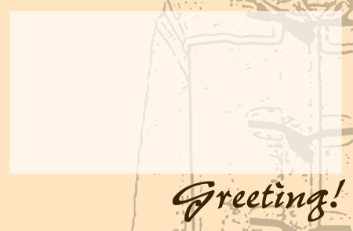

ポストカードの作り方
元画像を用意する
元になるものを用意します。絵でも、写真でもかまいません。
文字をのせる
「暑中お見舞い申し上げます」や、「明けましておめでとう」などの文字を載せます。
メッセージを書く部分を加える

メッセージが読みやすいように、色のうすい部分を作成します。
あとはメッセージを自分で書き込むだけです。
レイアウトや色合いを変更する
メッセージ用のボックスや、文字の場所を変更したり、色合いを変えたりして、
自分だけのオリジナルポストカードを作ってみましょう。
このページの一番上に戻る